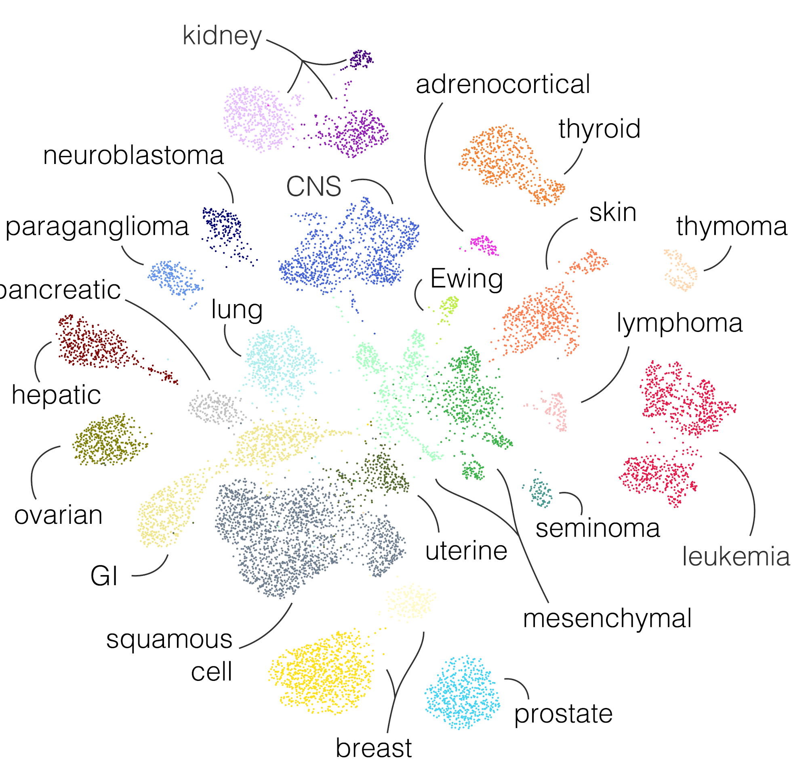

Welcome to the Annotation of the Transcriptional Cancer Atlas!¶
Version: 0.1.0
Last change: Jan 20, 2022
This website contains a detailed description of the classes available in the transcriptional cancer atlas, a curated resource of gene expression data clustering from the Hospital for Sick Children. The atlas was produced with RACCOON, a scale-adaptive clustering algorithm, and serves as a target to the OTTER classifier.
The data was gathered from different sources, including the TreeHouse Childhood Cancer Initiative, TCGA, TARGET , GTEx, and St. Jude Children’s Research Hospital.
The classes have been manually annotated. Each one has been characterized based on its most relevant transcriptional properties and, where available, clinical and genomics information.
This website is still a work in progress. We are striving to cover all subtypes currently available in the atlas, please check back in the future if what you are looking for is still not available. For questions, comments or suggestions, please Contact us. See also our Frequently Asked Questions section.
IMPORTANT NOTE: The annotation is updated periodically, make sure you are looking at a version that is matching the classifier used in your project.
{kind=link}
If using this annotation data or related software, please cite:
F. Comitani et al. (2022), in preparation.